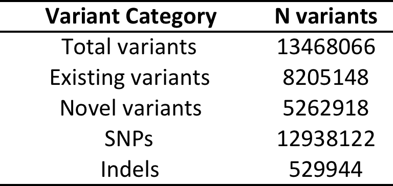

Insights from a Genetic Isolate
Institue of Health and Biomedical Innovation, Queensland University of Technology, Brisbane, Australia
AGTA 2016 - Pullman Hotel, Auckland, New Zealand
9-12th October 2016
Overview
- Norfolk Island
32 'Case studies':Phenomescan- WGS, founder effects and glaucoma
- Allele-specific methylation
Norfolk Island
...and the Norfolk Island Health Study...

- ~6000 member pedigree
Norfolk Island Health Study
Increased risk of metabolic disorders
WGS, founder effects and glaucoma
Other contributors: Rod Lea, David Eccles, Donia Macartney-Coxson, Heidi Sutherland, Larisa Haupt, Lyn Griffiths
Whole Genome Sequencing
© 2016 Illumina, Inc.
108 core-pedigree members
Illumina HiSeq X10 at the Garvan Institute
Decent amount of data (David Eccles)
QUT HPC facility
Total variants:
Functional* variants:

*Functional = predicted to be damaging in 5 in-silico tests (SIFT, POLYPHEN2, MUTATIONTASTER, PROVEAN, MUTATION ASSESSOR)
Founder Effect Variants
- ACOT4 (Acyl-CoA Thioesterase 4)
- Regulation of lipid metabolism
- Amino acid = p.TYR190ASN
- Freq A = 0.0099 (EUR), 0 (AFR) and 0 (EAS)
- Freq A in NI = 0.26
- Rare allele most likely came from England via Bounty Mutineers and then increased in frequency in NI due to founder effect
Founder Effect Variants

Glaucoma
There is a higher than usual prevalence of Glaucoma on NI, we explored the WGS data for assocated variants
Variant Filtering Strategy
- filtered vcf files at 14% MAF
- filtered based on genotypic models, both dominant (DOM) and allelic (ALL)
- this resulted in 1083 for the DOM model and 1437 for the ALL model
- the final filter was aimed to assess functional impact, we chose to go with SIFT and PROVEAN
- this returned 1 variant
Variant information
- reference allele = C
- alternate allele = T
- MAF CASES = 0.43 vs MAF CONTROLS = 0.05
- ALL p-value: CC_ALL=2.849-07
Predicted as deleterious/damaging
Gene has been previously associated with Retinoblastoma and Wilson's disease (copper deposits around the cornea)
Allelic-specific methylation
(very recent data)Other contributors: Rod Lea, Donia Macartney-Coxson, Nicole White, Daniel Kennedy, Heidi Sutherland, Larisa Haupt, Kerrie Mengersen, Lyn Griffiths
Identification of allele-specific methylation profiles across generations
Proof of principle pilot study
- measuring genome-wide allele-specific methylation (ASM)
- NGS bisulphite sequencing
- SeqCap Epi CpGiant (Illumina HiSeq)
- collected data for 24 NI individuals
- comprising a close 3 generation pedigree
- currently generating data for another ~90 samples
- Fully customised QC and analysis pipeline:
- fastqc, trimgalore
- bismark, sambamba, picard tools
- PileOMeth, R and methylkit
- parallel processing enabled for local and remote machines
- filtered at minimum 10 counts
coverage
- the lowest number of CpGs called for a given sample is 2.67M
- the highest number of CpGs called for a given sample is 7.52M
- the average across all samples is 3.48M
- on-target mapping rate across the 24 samples >95% average
- ~1.12M CpG sites in common across the 24 samples with at least 10 times coverage and on-target
QC
QC
Allelic-specific methylation
- for an initial look-see used methpipe suite
- estimates ASM at each CpG site based on strand ratios of methylation
- moving forward we want to use read data:
- assign parent of origin and then infer ASM
- gives the actual info rather than just knowning where an ASM event is
- promising method recently published for mice ASM - SNPsplit (Krueger 2016)
ASM regions
- Using a custom clustering method we identified ~1800 ASM regions (AMRs) conserved within the pedigree
- Many of these AMRs map to known and predicted imprinted genes
Visualising ASM
Documented and predicted human imprinted loci are displayed in darkred.
ASM plot of chromosome 20 for a nuclear family (father, mother, son, daugther)
Presence of SNPs
- 1,127,867 total methylation sites
- 444,330 have a SNP present on C/G (39.4%)
...however...
Considering MAF:
- 231,452 SNPs have recorded MAF info
- 12,670 SNPs >= 0.05 MAF
- 26,935 SNPs >= 0.01 MAF
Epigenetic inheritance
Next thing is to move onto modelling the inheritance......with the help of our brilliant Bayesian statisticians!
Acknowledgements
| QUT | STDOI @ UTRGV |
NZ collaborators |
|---|---|---|
| Lyn Griffiths |
John Blangero |
Donia Macartney-Coxson (ESR) |
| Rod Lea |
Joanne Curran |
David Eccles (Gringene Bioinformatics) |
| Larisa Haupt |
Harald Goring |
Geoff Chambers (VUW) |
| Heidi Sutherland |
||
| Michelle Hanna |
||
| ...the rest of the GRC IHBI lab group | ||
| Nicole White | ||
| Daniel Kennedy | ||
| Kerrie Mengersen |
| Garvan Institute of Medical Research / Kinghorn Centre for Clinical Genomics | Melanie Carless (Texas Biomedical Research Institute) | NHMRC |
Claire Bellis (Genome Institute of Singapore) |
||
Greg Gibson (Georgia Institute of Technology, USA) |
The people of Norfolk Island who who volunteered for this study.